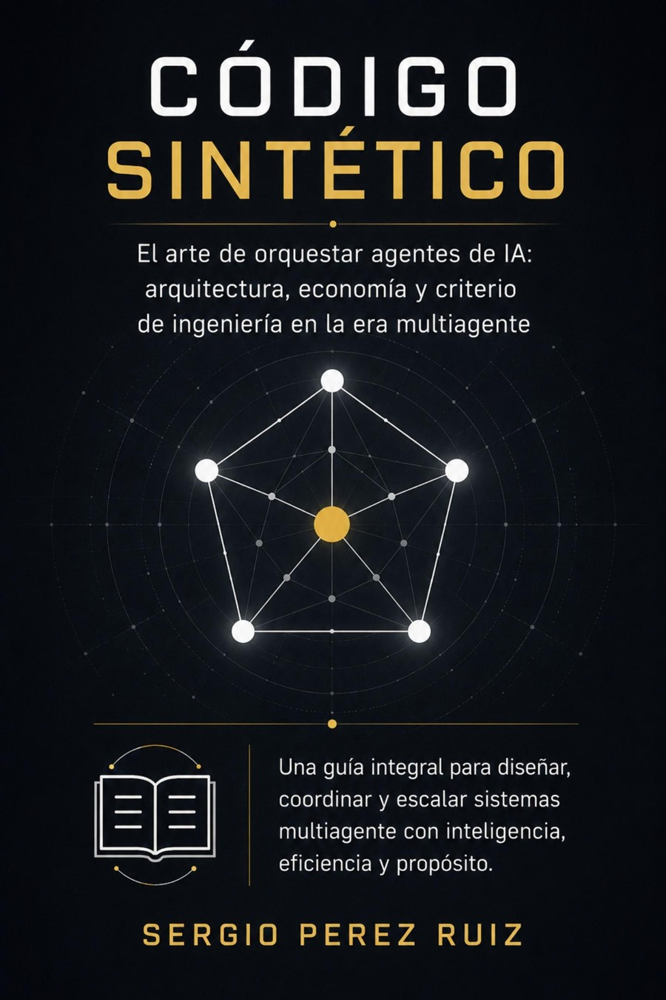

21 capítulos sobre arquitectura, economía y criterio de ingeniería para diseñar, gobernar y escalar sistemas multiagente en producción — sin quemar el presupuesto ni la confianza del equipo.

Computación e inteligencia artificial aplicada. Una guía integral para diseñar, coordinar y escalar sistemas multiagente con inteligencia, eficiencia y propósito.
Presupuesto y economía real de un pipeline de agentes, antes de que la factura del mes te avise.
AI Gateway, límites por equipo y arquitectura asíncrona para que escalar no signifique perder el control del gasto.
La deuda que un equipo humano acumulaba en un año, un sistema agéntico mal gobernado la produce en una semana.
RACI para enjambres, revisión de código con agentes y gates de CI/CD que bloquean la deuda agéntica antes de producción.
El arnés del agente, circuit breakers, trazabilidad y los invariantes que todo sistema de producción debe satisfacer.
Las herramientas cambiarán; el criterio de ingeniería es lo único que se queda contigo de un modelo al siguiente.
"La ingeniería de software no desaparece con los agentes. Evoluciona."— del manifiesto de Código Sintético
21 capítulos organizados en cinco partes, de los fundamentos agénticos al criterio de ingeniería que decide cuánto delegar y cuánto retener.
Cada patrón central del libro tiene una implementación de referencia ejecutable, con correspondencia verificada capítulo por capítulo.
Patrones de producción para sistemas multiagente — orquestación eficiente, calidad
autónoma en CI/CD, código autolimpiable y arquitecturas resilientes — organizados por
dominio en el paquete sintetico,
más una API de observabilidad con dashboard al estilo Datadog/CloudWatch.
| Capítulo | Módulo | Qué implementa |
|---|---|---|
| 03 | budget.py, orchestration.py | AI Gateway, presupuesto de tokens por equipo, gateway asíncrono |
| 04 | reasoning.py | ReAct, Tree of Thoughts, Reflexion |
| 05 | resilience.py | Arnés del agente, circuit breaker, auditoría |
| 06 | quality.py | TrustScore |
| 07 | governance.py | RACI Gate |
| 09 | governance.py | Invariantes de producción |
| 11 | quality.py | Deuda técnica agéntica (DebtTracker) |
| 12 | governance.py | Revisión y aprobación de decisiones |
| 13 | debugging.py | Agente de debugging en producción |
| 15 | governance.py | Escalado a humanos, atención al cliente |
| 16 | governance.py | DatabaseMigrationGate: decisiones irreversibles |
| 17 | security.py | Scanner de prompt injection, MCP Host |
| 18 | orchestration.py, economics.py | Presupuesto en enjambres, TCO/ROI |
| 19 | providers.py | Patrón Backend-Agnostic |
Siete repositorios satélite con patrones adicionales del stack moderno — un adelanto ejecutable del Volumen 1 de la serie (proyectada en 4 volúmenes).
| Tema | Repositorio | Desarrollo |
|---|---|---|
| Patrón Council (debate y consenso multiagente) | architecture-council | Cap. 8 y catálogo del cap. 20 · ampliado en Vol. 1 |
| Clean Architecture / "el modelo es un detalle" | llm-port-java-node | Se desarrolla en el Vol. 1 |
| Métrica CIU y Token-Burn silencioso | ciu-tracker | Se desarrolla en el Vol. 1 |
| Estimación Monte Carlo | agent-montecarlo | Se desarrolla en el Vol. 1 |
| Pirámide de testing (evals) | eval-harness-minimal | Se desarrolla en el Vol. 1 |
| Kafka como ciudadano del log | kafka-agent-citizen | Cap. 10 · ampliado en Vol. 1 |
| Trazas OpenTelemetry | agent-otel-tracing | Se desarrolla en el Vol. 1 |
Completos, sin resumen. Elige por cuál empezar — te llega directo a tu correo.
Sin spam. Te avisamos cuando salgan la tapa blanda, la tapa dura y las demás plataformas. Puedes darte de baja con un clic.
Elige tu formato favorito en Amazon. Google Play Books y Lulu siguen en proceso.